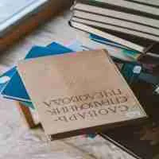

莫言小說：「歷史」的重構
NT$ 240

沈從文小說理論與作品新論
NT$ 280

存在的斷層掃描－羅門都市詩論
NT$ 240

羅門論
NT$ 200

中國早期三大新詩人研究
NT$ 560

二十世紀中國文學史（上）
NT$ 500

二十世紀中國文學史（下）
NT$ 500

華文後殖民文學---本土多元文化
NT$ 340
跨越邊界
NT$ 340

中國朦朧詩派研究
NT$ 280

重塑現代詩－羅門詩的時空觀
NT$ 360

老舍之死及其他
NT$ 280

情繫伊甸園：創世紀詩人論
NT$ 380

無名氏的文學作品探索與紀懷
NT$ 400

純與俗--文學的對立與溝通
NT$ 360

覃子豪詩研究
NT$ 300

莫言《豐乳肥臀》論
NT$ 240

雪泥上的鱗爪
NT$ 360

批評從心
NT$ 380

草根傳播與鄉村記憶
NT$ 320
「文革」對「五四」及「現代文藝」的敘述闡釋
NT$ 380
我心中的歌：現代文學星空
NT$ 500

尋覓「新男姓」：論五四女性小說中的男性形象書寫
NT$ 340

大陸當代小說散論
NT$ 240
追憶與冥想的誘惑
NT$ 320

「革命敘事」與現代性---中國大陸「十七年文學」研究
NT$ 320

曹禺戲劇與政治
NT$ 460
大陸現代小說小史
NT$ 220

文革文學大系 1~12
NT$ 5000
傳播的文化修辭
NT$ 300

謝冰瑩及其作品研究（BOD）
NT$ 240
追想彼岸
NT$ 360

閱讀的鏡像（BOD）
NT$ 350
嬗變中的光影
NT$ 240

慾望與思考之旅
NT$ 480

黃遵憲的詩歌世界（BOD）
NT$ 420

精神家園（BOD）
NT$ 350

王蒙小說與蘇俄文學（BOD）
NT$ 420

藝術與自然的融合－當代詩文評論集（BOD）
NT$ 360

行走中的歌者：林明理談詩
NT$ 480

「文革」與「五四」比較論：以文學為中心
NT$ 200

為播詩種與莊雲惠詩作初探：暨莊老師的詩種花園詩友會
NT$ 280

早期藍星詩史
NT$ 600
主體與愛慾：現當代魂作品論述
NT$ 380

名家現代詩賞析
NT$ 600
天真之旅：武俠小說與科幻小說論文集
NT$ 360

現代詩賞析
NT$ 580

中國詩人新論
NT$ 300